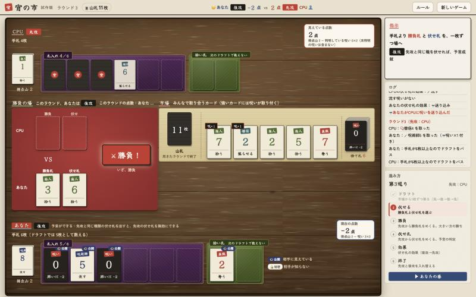
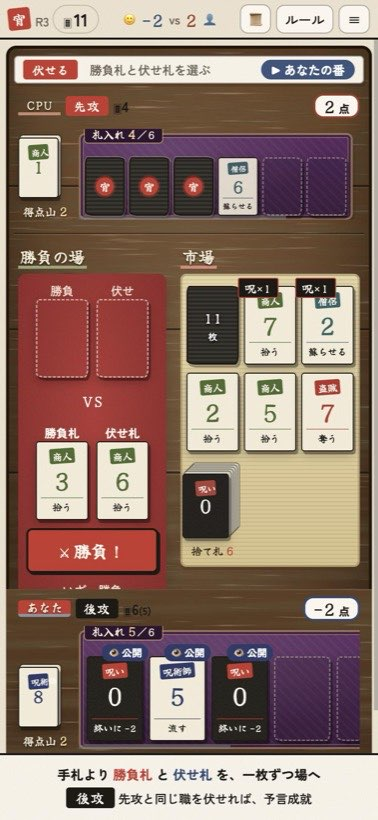

🏆 得点山のカードを多く集めた方の勝ち。山札がなくなったら終わり。
（手札に残った💀呪いは1枚−2点）
💡 コツ：職業の効果は1つだけ（🗡️奪う・🪄流す・💰拾う・📿蘇らせる）。弱い札でわざと負けて効果を使うのもアリ。
カードにマウスを合わせると（スマホは長押し）、そのカードの効果が見られます。
山札が尽きたラウンドの終わりにゲーム終了。点数が多い方の勝ち。
行動カードの効果は職業ごとに1つだけ。どの数字でも1回発動する。勝負札なら負けたとき、伏せ札ならめくったときに発動する。
| 職業 | 効果（勝負札で負けたとき／伏せ札をめくったとき） |
|---|---|
| 🗡️盗賊 | 奪う：相手の得点山から1枚奪って、自分の得点山に入れる |
| 🪄呪術師 | 流す：手札の呪いを1枚、相手の手札に押し付ける |
| 💰商人 | 拾う：市場から1枚取る（次のドラフトでは手札の枚数に数えない） |
| 📿僧侶 | 蘇らせる：捨て札から好きなカード1枚を手札に加える（呪い・満月・月蝕も選べる。次のドラフトでは数えない） |
| 💀呪い | 勝負札：数字0で負け、勝者の手札へ／伏せ札：送り込み（必ず相手の手札へ） |

1211451367128149103
12101134513671289